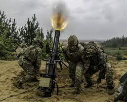
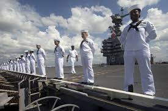

| HOME | SOURCES | TAKE THE QUIZ! | BACK TO INDEX |
U.S. Code: Title 10U.S. Code: Title 10 covers the definitions and regulations of the U.S. Armed forces and the following branches. The Title contains five Subtitles that establish the branches of the military, the general laws of the military, and the reserve forces. This title was enacted on August 10, 1956. Subtitle A: General Military LawsSubtitle A of Title 10 establishes the laws of the military. In other words, it sets up the Military Justice System. This is like the U.S. Court System. However, the Military Justice System gives the commanders discretion in deciding whether the accused is innocent or guilty. They also have several options when deciding the resolution for the disciplinary dispute. Those are as follows: Subtitle B: ArmyThe U.S. Army is designed to be the “boots on the ground” units that dominate over land. Land units are crucial in battle as they seize necessary resources and facilities that the enemy requires for success. The Army is divided into many sectors that can make up their own websites and research papers, but all are to accomplish the goal of protecting the nation and its interests. The Army is the largest branch of the military, making this division necessary to specialize in all areas the Army needs to be. Subtitle C: Navy And Marine CorpsThe U.S. Navy is designed to handle all combat at sea with cutting edge fleets made up of aircraft carriers, destroyers, submarines, etc. Travelling by sea also assists in transporting more personnel than aircraft could manage, making the Navy proficient at moving mass amounts of soldiers while assisting the fight from the sea. The Marine Corps are a branch of the Navy but serve a much different purpose. Marines are the emergency, “tip of the spear” approach to combat. They are always the first available branch, having boots on the ground faster than any other branch of the military. The Marines, being a branch of the Navy, still operate more like the Army only with less soldiers and more specialized training. In addition, Marine boot camp is considered the most difficult, being 12-13 weeks (about 3 months) long, compared to the Navy's 8-week boot camp. Their training is also different based on the roles they take on. Navy recruits, for example, focus more on ship combat, while marines perform more ground combat training, such as firearms and combat first aid. Subtitle D: Air Force and Space ForceThe U.S. Air Force conducts a large majority of all combat in the air. Its main goal is to defend the nation and clear the skies for ground and sea units to take over objectives. The Air Force uses cutting edge technology that pushes the boundaries on what's possible with technology today. U.S. Air Force veterans are well trained in everything that flies and are trained how to survive complex encounters as the skies become crowded. The Space force is the only branch of the military created after 1947, only being established in 2019. The branch may be new, but the concept of space superiority is not. Using orbital technology, the U.S. Military is faster, informed, precise, and overall, more lethal because of control over space above the Earth. For now, the space force does not prioritize combat themselves but serves as a necessary information-gathering branch and connecting force that allows all combat to be as efficient as possible. The Space force also pioneer's technology that has anything to do with space exploration, pushing us closer and closer to interplanetary or interstellar travel. Subtitle E: Reserve ComponentsMilitary Reserves are for those who want to be mostly civilians. This makes any branch one joins a more part-time job. Essentially, going reserves ensures that the military has a backup of a certain percentage of the population to call on in case of immediate reinforcement. These soldiers stay trained 100% of the time and are ready to fight the minute they are called. To be more exact, reserves work as follows: | |||